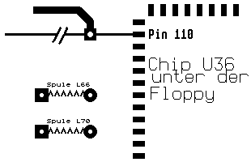
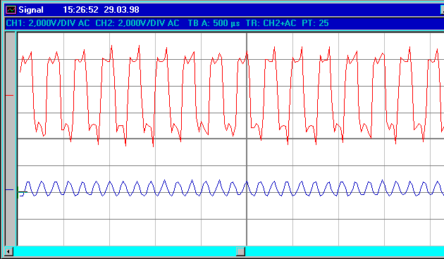

Previous
Next
TOC

Es kann durchaus sein, das man noch einen weiteren 74F04 benötigt und
das Taktsignal für den SDMA Chip über weitere Gatter führen muß. Eine
genaue Angabe der benötigten Gatter ist aufgrund der Produktionstole-
ranzen der ICs nicht möglich. Als sicherer Anhaltspunkt ist die abso-
lute in Phasenlage der beiden Taktsignale als Referenz zu nehmen.
Liegt das Taktsignal vom Pin 1 des 74F04 ICs absolut deckungsgleich
mit dem SDMA Taktsignal übereinander ist die Phasenlage korrekt und
der Rechner sollte nun keine Probleme mehr bereiten.

16.042494MHz
32.084988MHz
Die Abbildung zeigt oben die Signalform des 16.042494MHz Taktes,
welcher an Pin 191 aus dem Combel Chip herauskommt. Unten ist die
Signalform des 32.084988MHz Taktes am Ausgang vom Transistor Q107 zu
sehen. Der 32.084988MHz Takt wird über eine
PLL vom Horizontalsync-
signal vom Monitoranschluß synchronisiert, um ein Zeilenfransen beim
Betrieb eines Videodigitizers etc. zu vermeiden.
Die nachfolgende Abbildung zeigt die Idealform eines Taktsignales aus
dem Datenblatt eines Quarzoszillators zur anschauung:
weiterblättern
Kapitel Der Clockpatch aus der ST-Computer Zeitschrift, Seite 5